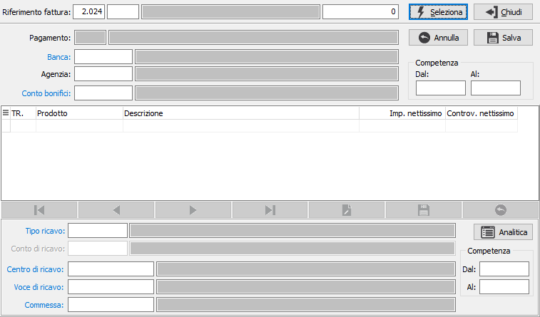
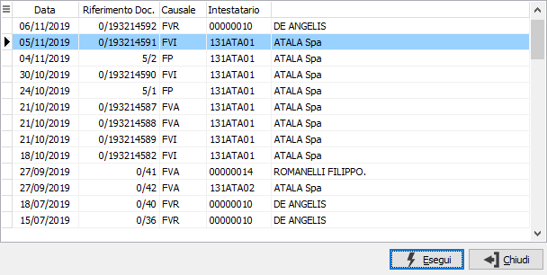
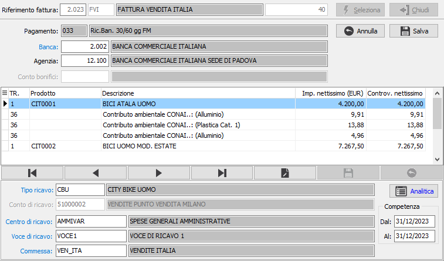

Manutenzione dati fatture
Il programma consente la modifica di banca, agenzia, conto bonifici e delle date di competenza per fatture non contabilizzate; nella griglia vengono mostrate le righe con i campi eventualmente modificabili.
La presenza delle date di competenza è gestita in base alla configurazione delle vendite; se gestite di testa saranno presenti, nei dati di testa, sempre modificabili, oppure sulle righe della fattura, modificabili in base al tipo rigo ed alla gestione del campo sul tipo rigo.

Il programma consente di selezionare un singolo documento e ne mostra i dati. La selezione può avvenire anche tramite una finestra di ricerca richiamabile dai campi anno/causale/numero tramite zoom o doppio clic del mouse.

Premendo il pulsante Seleziona vengono mostrati i dati e sono modificabili Banca, Agenzia, il conto bonifici se il pagamento lo prevede e le date di competenza se gestite di testa.
Le righe di classe Annotazioni non sono modificabili, sulle restanti tipologie di righe, in base alle configurazioni generali ed alla configurazione del tipo rigo sono mostrati e possono essere modificati i seguenti dati:

Al termine delle operazioni premendo il pulsante Salva saranno rese effettive le modifiche premendo Annulla si ritorna alla selezione del documento.